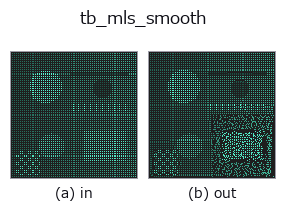

typed op• 数据种类:points → points
• 调用:fullseye.apply(img, "tb_mls_smooth", a=0.5, b=0.5)(2-D 的模型是一张图 + 两个标量旋钮 a,b∈[0,1])

*图为在 128×128 合成输入上实际运行的输出。左为输入，右为输出。点云以俯视散点显示(亮度 = z)，一维序列为折线，体数据为沿 z 的最大值投影，视频为中间帧，复数图像为幅值；无法成像的返回值直接显示数值。*
扫描旋钮 a(0.1 / 0.5 / 0.9，另一旋钮取默认):
▸ tb_mls_smooth: 旋钮 a 扫描 (文档网站)
*旋钮 b 不改变输出(实测: 0.1 / 0.5 / 0.9 相同)。*
阶段(前置算子 → 本算子，从左到右):
▸ tb_mls_smooth: 处理阶段 (文档网站)
换别的图像(合成场景 / 照片 / 硬币。上排为输入，下排为对应输出。旋钮取默认):
▸ tb_mls_smooth: 其他输入图像 (文档网站)
将各点投影到局部多项式曲面上以去除噪声（移动最小二乘法 Moving Least Squares 平滑）。
对每个点收集半径 radius 内的邻域,用加权 PCA 估计局部平面(法线 n 与切平面的 2 个轴),对邻域的“切平面上坐标 (u,v) → 法线方向的高度 h”用高斯加权最小二乘拟合 order 次的多项式曲面。关注点自身位于局部坐标的原点 (0,0), 因此沿法线方向移动拟合曲面在 (0,0) 处的高度(= 常数项),从而投影到曲面上。保持面的形状的同时只平滑传感器噪声。
points : array_like, shape (N, 3)
输入点云。
radius : float
邻域球的半径(> 0)。局部曲面的支撑。
order : int
局部多项式的次数(默认 2)。项数为 (order+1)(order+2)/2。
ndarray, shape (N, 3)
平滑后的点云(保持顺序、点数)。邻域少于多项式项数的点保持原位。
这是近似方法。邻域数少于项数/局部平面退化的点不移动,保持原位(为了不在孔洞或边界处乱动的安全措施)。radius <= 0 时 ValueError,空输入返回空。
桥接到 2-D 进化注册表的 3d op mls_smooth。实现相同,只有调用约定改为 op(v, a, b)。a 调节 order(默认 2)。b 未使用。
• 示例数据目录(下载 URL / 许可证) —— 2-D 用 skimage.data(BSD/公有领域)加合成图,3-D 给出真实数据源(Stanford/PDS 等)的下载 URL。
• 算子来历与参考文献 —— 该算子族所依据的研究/方法出处。
下面的程序已确认可以运行(与图相同的输入)。在 Studio 帮助中，此块会变成按钮，可当场加载并运行。
img_to_points 0.50 0.50 tb_mls_smooth 0.50 0.50
下面的示例调用的是底层账本算子 mls_smooth。此桥接算子只是把同一实现适配为 fn(v, a, b) 约定，行为完全相同(只是调用形式不同)。
• pcl_geodesic — py -3.11 examples_3d/pcl_geodesic.py
points 作为输入)identity · tb_points_to_voxel · tb_estimate_point_normals · tb_iss_keypoints · tb_project_points · tb_render_point_depth · tb_statistical_outlier_removal · tb_radius_outlier_removal
typed)tb_points_to_voxel · tb_estimate_point_normals · tb_iss_keypoints · tb_project_points · tb_render_point_depth · tb_statistical_outlier_removal · tb_radius_outlier_removal · tb_voxel_grid_downsample
*Provenance: ops.py — 2D 算子登记表。本条目由 tools/opdocs.py md 自动生成(请勿手工编辑)。*
© 2026 Kazufumi Furuse — Fullseye operator documentation. Licensed under Apache-2.0.